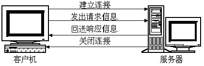
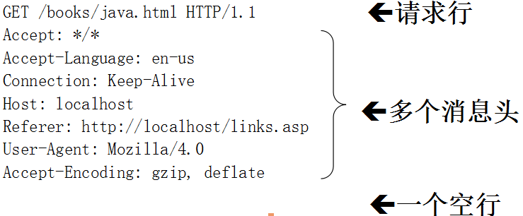
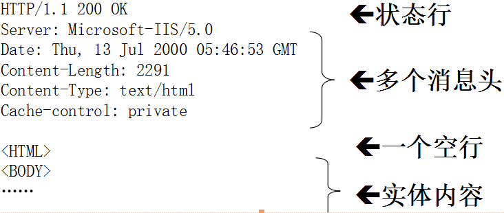

HTTP简介
- WEB浏览器与WEB服务器之间的一问一答的交互过程必须遵循一定的规则，这个规则就是HTTP协议。
- HTTP是 hypertext transfer protocol（超文本传输协议）的简写，它是 TCP/IP 协议集中的一个应用层协议，用于定义WEB浏览器与WEB服务器之间交换数据的过程以及数据本身的格式。
- HTTP协议的版本 HTTP/1.0、HTTP/1.1、HTTP-NG
HTTP与HTTPS的区别：http://www.mahaixiang.cn/internet/1233.html
HTTP会话方式

- 浏览器与WEB服务器的连接过程是短暂的，每次连接只处理一个请求和响应。对每一个页面的访问，浏览器与WEB服务器都要建立一次单独的连接。
- 浏览器到WEB服务器之间的所有通讯都是完全独立分开的请求和响应对。
HTTP请求消息
请求消息的结构：
- 一个请求行、若干消息头、以及实体内容，其中的一些消息头和实体内容都是可选的，消息头和实体内容之间要用空行隔开。

HTTP响应消息
响应消息的结构：
- 一个状态行、若干消息头、以及实体内容，其中的一些消息头和实体内容都是可选的，消息头和实体内容之间要用空行隔开。

HTTP消息其他细节
- 响应消息的实体内容就是网页文件的内容，也就是在浏览器中使用查看源文件的方式所看到的内容。
- 一个使用GET方式的请求消息中不能包含实体内容，只有使用POST、PUT和DELETE方式的请求消息中才可以包含实体内容。
使用GET和POST方式传递参数
在URL地址后面可以附加一些参数
- 举例：http://www.it315.org/servlet/ParamsServlet?param1=abc¶m2=xyz
GET方式- 举例：GET /servlet/ParamsServlet?param1=abc¶m2=xyz HTTP/1.1
- 特点：传送的数据量是有限制的，一般限制在1KB以下。
POST方式- 举例：
- POST /servlet/ParamsServlet HTTP/1.1
- Host:
- Content-Type: application/x-www-form-urlencoded
- Content-Length: 28
- param1=abc¶m2=xyz
- 特点：传送的数据量要比GET方式传送的数据量大得多 。
使用GET方式传递参数
- 在浏览器地址栏中输入某个URL地址或单击网页上的一个超链接时，浏览器发出的HTTP请求消息的请求方式为GET。
- 如果网页中的
<form>表单元素的method属性被设置为了“GET”，浏览器提交这个FORM表单时生成的HTTP请求消息的请求方式也为GET。 - 使用GET请求方式给WEB服务器传递参数的格式： http://www.atguigu.com/counter.jsp?name=lc&password=123
使用GET方式传送的数据量一般限制在1KB以下。
使用POST方式传递参数
- POST请求方式主要用于向WEB服务器端程序提交FORM表单中的数据。
- POST方式将各个表单字段元素及其数据作为HTTP消息的实体内容发送给WEB服务器，传送的数据量要比使用GET方式传送的数据量大得多。
如何在 Servlet 中获取请求信息
Servlet 的 service() 方法用于应答请求：因为每次请求都会调用该方法
ServletRequest:封装了请求信息。可以从中获取到任何请求信息
ServletResponse:封装了响应信息。如果想给用户什么响应的话，具体可以使用该方法
这两个接口的实现类都是服务器给予实现的，并在服务器调用 service 方法时传入
ServletRequest
获取请求参数
- String getParameter(String name):根据请求参数的名字，返回参数值。但是参数有多个值（如 checkbox），该方法只能获取到第一个提交的值。
- String[] getParameterValues(String value):根据请求参数的名字，返回请求参数对应的字符串数组。
123456public void service(ServletRequest request, ServletResponse response) throws ServletException, IOException {String[] intresting = request.getParameterValues("intresting");for(String ins: intresting) {System.out.println(">> " + ins);}}- Map getParameterMap():返回参数名对应的 Enumeration 对象，类似于 ServletConfig(或ServletContext)的 getInitParameterNames() 方法。
1234Map<String, String[]> map = request.getParameterMap();for(Map.Entry<String, String[]> entry: map.entrySet()) {System.out.println("**" + entry.getKey() + ":" + Arrays.asList(entry.getValue()));}- Enumeration getParameterNames():返回请求参数的键值对： key:参数名，value:参数值，String数组类型。
获取请求的 URI：
123HttpServletRequest httpServletRequest = (HttpServletRequest) request;String requestURI = httpServletRequest.getRequestURI();System.out.println(requestURI);获取请求方式：
1String method = httpServletRequest.getMethod();若是一个GET请求，获取请求参数对应的那个字符串，即 ? 后的那个字符串
1String queryString = httpServletRequest.getQueryString();获取请求的Servlet的映射路径
1String servletPath = httpServletRequest.getServletPath();和 attribute 相关的几个方法
HttpServletRequest:是ServletRequest的子接口。针对于HTTP请求所定义。里边包含了大量获取HTTP请求相关的方法。